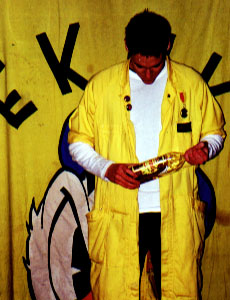
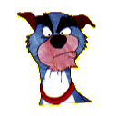

| Hej! Mitt namn är Tjifen och min uppgift i EKAK är kassör. Ett järnfast grepp om pengapungen alltså! Privat heter jag Henrik. |
| Tjifen ären jakthund hämtad ur filmen "The Fox and the Hound", eller "Micke och Molle" som den heter på svenska. Tjifen tardet gärna ganska lungt men när det väl gäller är han på bettet. Tjifens motto är "tänk elakt". Riktigt så farlig är jag inte... |